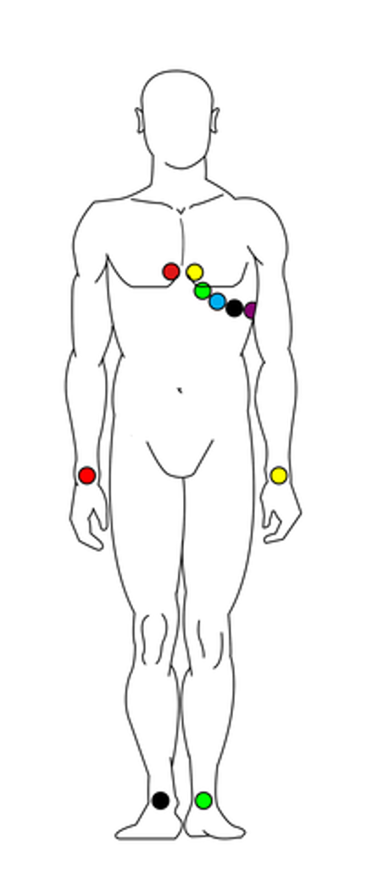
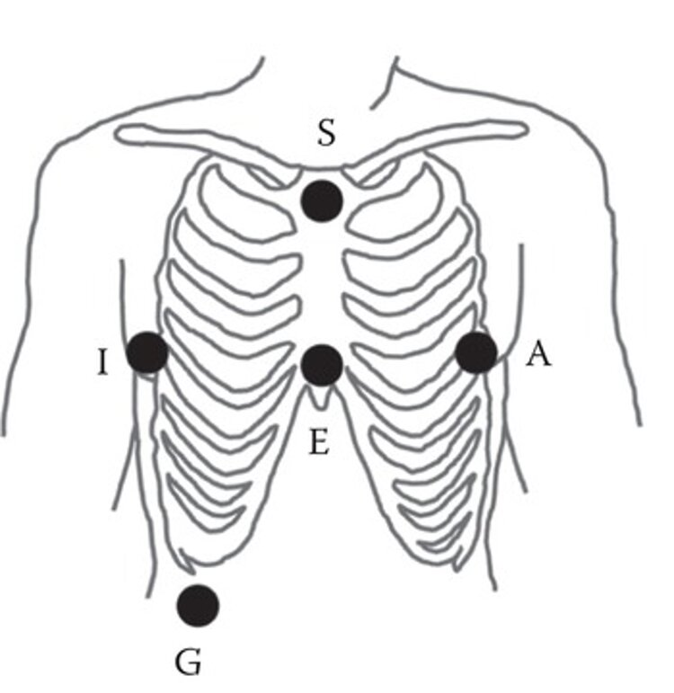
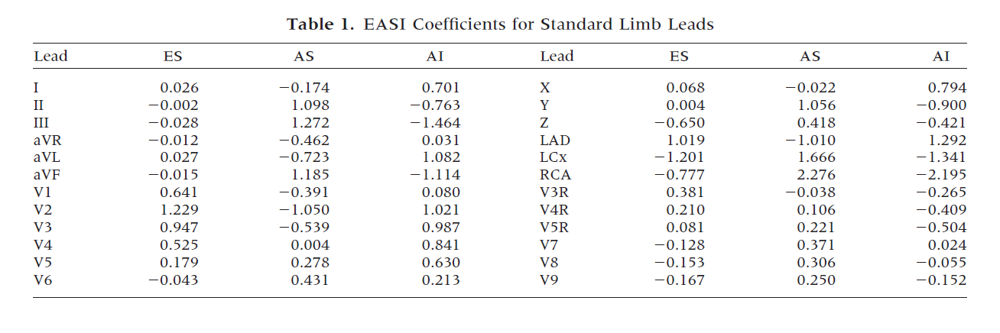

EASI ECG

The 12 lead electrode configuration.
Source: CardioSecur
Conventional 12-lead ECG uses 10 electrodes, with 6 electrodes on the chest and 4 electrodes on the limbs’ extremities.
Although it provides comprehensive information about electrical processes inside the heart, the number of electrodes and the long distance between them makes 12-lead ECG impractical and uncomfortable. This is especially true if the participant must remain still for a lengthy recording session.
Summary of 12-lead ECG drawbacks:
-
Large number of electrodes required
-
Complicated configuration
-
Prone to noise
-
Not suitable for long-term use
Introduction
Because of these challenges, Dower et al., 1988 proposed a modified set-up that can derive 12-lead ECG signals from only 5 ECG channels. This set-up is called the EASI method.
The EASI method benefits from:
-
High reproducibility, because landmarks for electrode placement are easy to identify
-
High signal-to-noise ratios, due to fewer movement artefacts
-
High sensitivity to electrical events in lateral, anteroposterior and vertical directions
-
Increased patient comfort
-
Increased technical convenience
The only true drawback of EASI ECG is that two of the electrodes are difficult to place as they sit in an awkward location on the chest. With a little practice, however, it is possible for patients to place this electrode themselves.
Although the FDA approved the EASI method for use in the assessment of normal, abnormal, and paced cardiac rhythms, the method is not often used in clinical practice. As such, this article serves as an example of data processing, rather than a clinical ECG protocol.
Set-up

The EASI electrode configuration.
Mentalab Explore is well suited to EASI ECG recordings.
To record ECG data using the EASI method:
-
Attach your Mentalab Explore device to a Velcro strap on or around your participant’s chest.
-
Attach the electrodes in the following configuration:
-
E: On lower sternum at level of 5th intercostal space
-
A: On the same level as E, on left midaxillary line
-
S: On upper sternum
-
I: Same level as E and A, on right midaxillary line
-
G: Ground anywhere below 6th rib
-
-
Transform the EASI channels to 12-lead channels using the table below, which lists the coefficients of a linear transform.

EASI coefficients for standard limb leads.
For more information or support, contact support@mentalab.com.